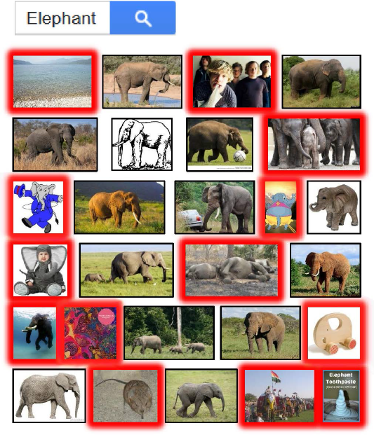
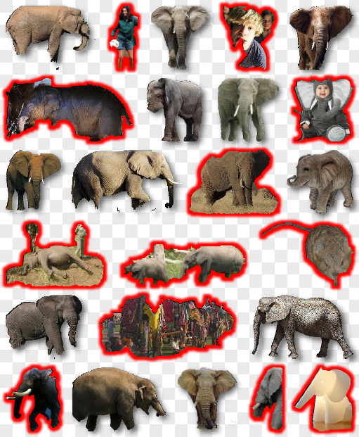

Distilled Collections from Textual Image Queries
1Tel Aviv University
2Shenzhen VisuCA Key Lab/SIAT
3Memorial University
4Microsoft Research
5Simon Fraser University
|  |
 |
 |
| (a) |
(b) |
(c) |
Figure: (a) Unstructured image collections from text queries are noisy and typically contain many images that do not show
the object of interest (such outliers are marked with red borders). (b) Single-image segmentation is unreliable and produces
many erroneous shapes, which either do not contain the object, cut off parts of it, or include chunks of the background. (c) Our
distillation algorithm extracts only a subset of kernel of inlier shapes and organizes them into clusters (marked with colored
boundaries).
Abstract
We present a distillation algorithm which
operates on a large, unstructured, and noisy collection of internet images returned
from an online object query. We introduce the notion of a distilled set, which is a clean, coherent, and structured subset of inlier
images.
In addition, the object of interest is properly segmented out throughout the distilled set.
Our approach is unsupervised, built on a novel clustering scheme, and solves
the distillation and object segmentation problems simultaneously.
In essence, instead of distilling the collection of images, we distill a collection of
loosely cutout foreground ``shapes'', which may or may not contain the queried
object. Our key observation, which motivated our clustering scheme, is that outlier
shapes are expected to be random in nature,
whereas, inlier shapes, which do tightly enclose the object of interest, tend to be well
supported by similar shapes captured in similar views.
We analyze the commonalities among candidate foreground segments,
without aiming to analyze their semantics, but simply by clustering
similar shapes and considering only the most significant clusters representing non-trivial
shapes.
We show that when tuned conservatively, our distillation algorithm is able to extract a
near perfect subset of true inliers. Furthermore, we show that our technique scales well in the sense that the precision rate remains high, as the collection grows.
We demonstrate the utility of our distillation results
with a number of interesting graphics applications.
Resources
Paper (PDF)
Datasets (our full Elephant, Full Body, Headphone, Hippo, Office Chair, and Rubber Duck collections)
Results (on our datasets using single-image segmentation)
BibTex Reference
@article{elor2015distilled,
author = {Hadar Averbuch-Elor and Yunhai Wang and Yiming Qian and Minglun Gong and Johannes Kopf and Hao Zhang and Daniel Cohen-Or},
title = {Distilled Collections from Textual Image Queries},
journal = {Computer Graphics Forum, (Proceedings Eurographics 2015)},
volume = {34},
number = {2},
pages = {to appear},
year = 2015,
}
Presentation slides
To appear later...
Acknowledgements
This work supported by the Israel Science Foundation, the NSFC Grant (Number 61202222) and the NSERC Grant (Number 293127).
Last update to the page: January 21, 2015.